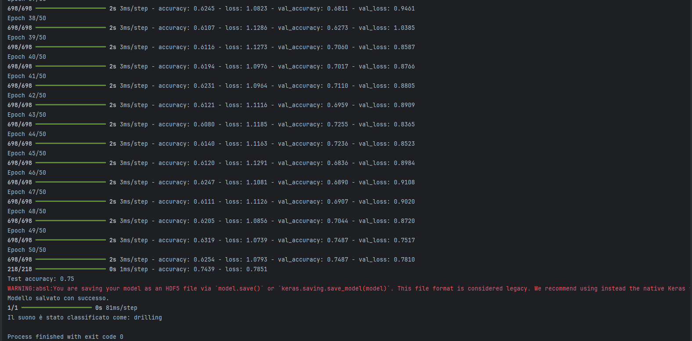
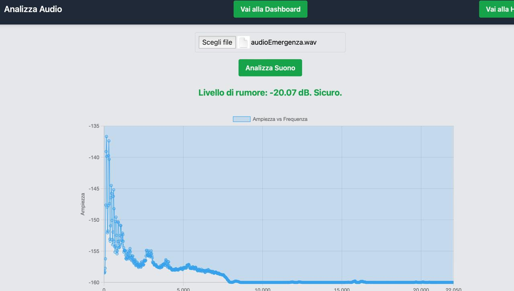

Introduzione
Il progetto assegnato si concentra su un problema rilevante negli ambienti industriali caratterizzati da alti livelli di rumore: la protezione dell'udito dei lavoratori. In molte zone industriali, il rumore può superare gli 85 dB, un livello considerato dannoso per l'udito umano se l'esposizione è prolungata. L'obiettivo del nostro sistema è monitorare costantemente i livelli sonori e inviare avvisi rapidi ai lavoratori quando viene superata questa soglia. Per affrontare e risolvere questa sfida, è stato sviluppato un sistema che utilizza un Raspberry Pi 4, configurato come client per il monitoraggio in tempo reale del rumore. Il dispositivo raccoglie i dati acustici da un Beacon simulato e li trasmette a un server, che si occupa di elaborare le informazioni e di visualizzarle su un computer. Quando il sistema rileva livelli di rumore superiori a 85 dB, invia immediatamente una notifica per avvisare i lavoratori, segnalando la necessità di adottare misure di protezione. Questa funzione è particolarmente utile in ambienti dove i livelli sonori possono cambiare improvvisamente, mettendo a rischio la salute degli operatori. È stato inoltre implementato un algoritmo di deep learning basato su una rete neurale feedforward, in grado di classificare e riconoscere i vari tipi di suoni presenti nell'ambiente. Questo algoritmo è stato addestrato su un dataset contenente 8.000 suoni, suddivisi in diverse categorie. Una volta completato l'addestramento, l'algoritmo è in grado di analizzare un suono e restituirne la categoria di appartenenza con una precisione del 70%.
Caratteristiche del Progetto
- Monitoraggio del rumore in tempo reale
- Rilevamento dispositivi Bluetooth vicini
- Dashboard interattiva
Architettura del Sistema

Funzionamento progetto
Caso d'uso: Notifica Intelligente
- Beacon non rilevato o spento
- Il lavoratore si trova a una distanza sicura
- Il lavoratore si trova troppo vicino e il rumore supera la soglia
Grafico che visualizza a che distanza si trova il Beacon il tempo reale

Caso d'uso: Machine learning e Categorizzazione del suono
Il processo comprende la preparazione dei dati, l’estrazione delle caratteristiche audio, l’espansione dei dati tramite tecniche di data augmentation, l’addestramento di una rete neurale e la previsione della categoria di un nuovo file audio.
Caso d'uso: Analisi di un suono
È disponibile un pulsante che consente di selezionare un suono da analizzare. Durante la riproduzione, viene mostrato un grafico ampiezza-frequenza che illustra l'andamento del suono. Inoltre, il sistema informa l'utente se il suono è dannoso per l'udito umano.
